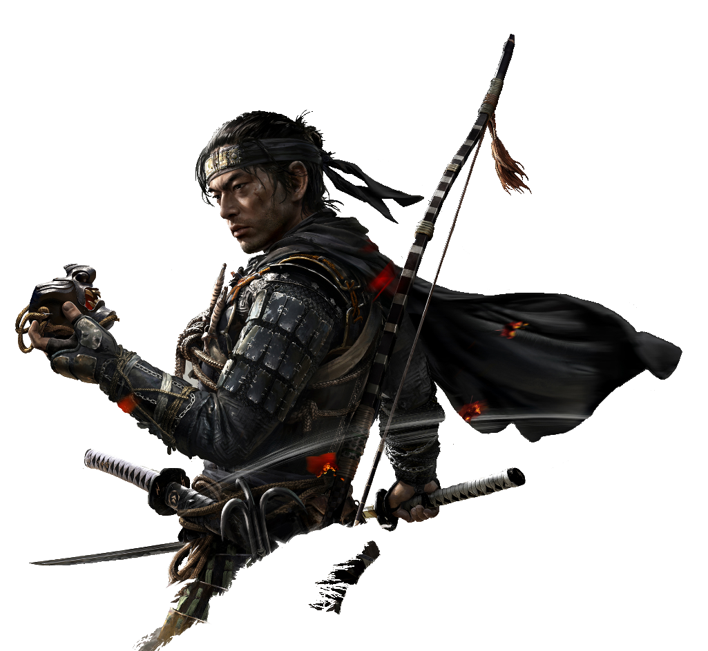

"Ghost of Tsushima" segue Jin Sakai, um samurai da ilha de Tsushima, durante a invasão mongol no século XIII. Após seu clã ser quase destruído e seu tio, Lord Shimura, ser capturado, Jin se vê forçado a abandonar as tradições samurais e adotar táticas furtivas, tornando-se o "Ghost" de Tsushima. Ele luta para libertar a ilha, confrontando dilemas morais sobre honra, identidade e os métodos de combate, enquanto tenta salvar sua terra da invasão mongol.
